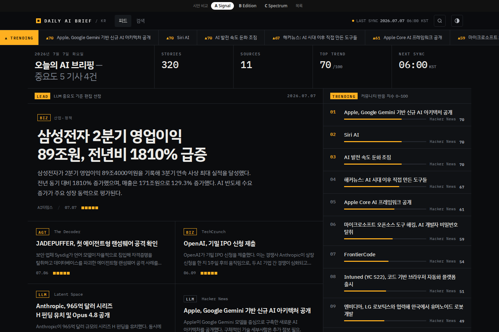
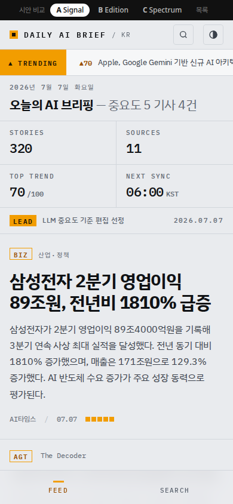
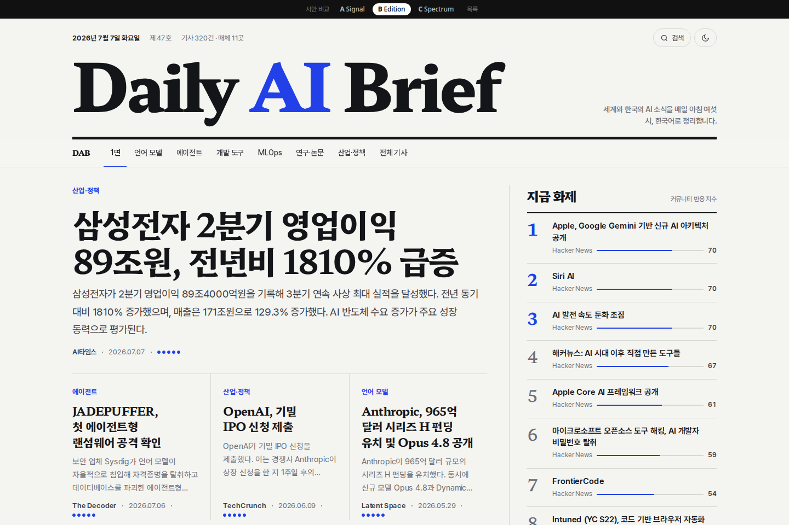
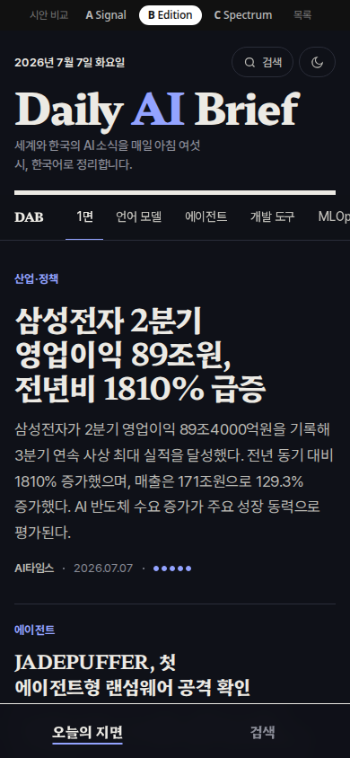
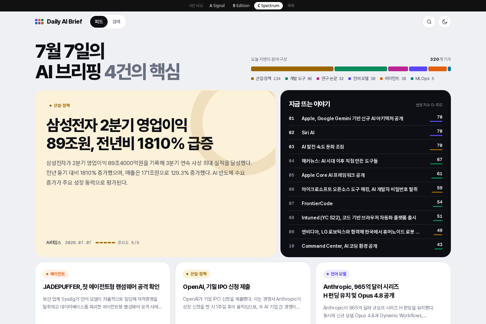
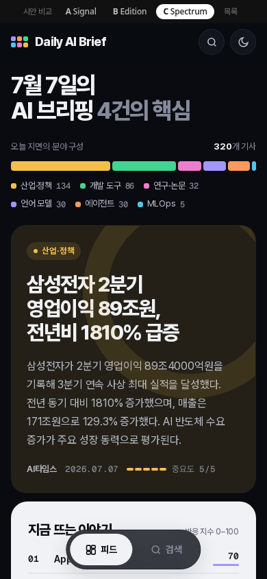

<title>Daily AI Brief 디자인 시안</title>
<meta name="viewport" content="width=device-width, initial-scale=1, viewport-fit=cover" />
<style>
/* Layout: 세 시안을 같은 순서·같은 항목으로 비교하는 세로 카드 목록. 시안 자체를 돋보이게 중립 톤. */
:root {
  --bg: #f3f3f5; --card: #ffffff; --fg: #15161a; --fg-2: #4a4d57; --muted: #737784; --line: #e2e3e8;
  --a: #b86a00; --b: #2140e8; --c: #0b8a5c;
}
@media (prefers-color-scheme: dark) {
  :root:not([data-theme="light"]) { --bg: #0d0e12; --card: #16181e; --fg: #eeeff2; --fg-2: #bfc2cc; --muted: #8b8f9b; --line: #272a33; --a: #ffb020; --b: #93a3ff; --c: #42d491; color-scheme: dark; }
}
:root[data-theme="dark"] { --bg: #0d0e12; --card: #16181e; --fg: #eeeff2; --fg-2: #bfc2cc; --muted: #8b8f9b; --line: #272a33; --a: #ffb020; --b: #93a3ff; --c: #42d491; color-scheme: dark; }
* { box-sizing: border-box; }
body { margin: 0; background: var(--bg); color: var(--fg); font: 400 15px/1.6 -apple-system, "Apple SD Gothic Neo", "Malgun Gothic", "Pretendard", system-ui, sans-serif; word-break: keep-all; overflow-wrap: anywhere; }
.page { max-width: 1120px; margin: 0 auto; padding-inline: 20px; padding-block: 40px 64px; display: grid; gap: 28px; }
h1 { margin: 0; font-size: clamp(28px, 4vw, 40px); letter-spacing: -0.04em; line-height: 1.2; }
.lede { margin: 8px 0 0; color: var(--fg-2); max-width: 62ch; }
.shared { display: grid; grid-template-columns: repeat(auto-fit, minmax(220px, 1fr)); gap: 10px; }
.shared div { background: var(--card); border: 1px solid var(--line); border-radius: 14px; padding: 14px 16px; font-size: 14px; color: var(--fg-2); }
.shared b { display: block; color: var(--fg); margin-bottom: 2px; }
.opt { background: var(--card); border: 1px solid var(--line); border-radius: 20px; overflow: hidden; display: grid; grid-template-columns: minmax(0, 1.45fr) minmax(0, 1fr); }
.shots { position: relative; background: var(--bg); padding: 18px; display: flex; gap: 14px; align-items: flex-start; border-right: 1px solid var(--line); }
.shots img { display: block; border-radius: 10px; border: 1px solid var(--line); max-width: 100%; height: auto; }
.shots .d { flex: 3.2; min-width: 0; }
.shots .m { flex: 1; min-width: 0; }
.info { padding: 24px 24px 22px; display: flex; flex-direction: column; gap: 14px; min-width: 0; }
.tag { display: inline-flex; align-items: center; gap: 8px; font-weight: 700; font-size: 13px; color: var(--k); }
.tag i { width: 22px; height: 22px; border-radius: 6px; background: var(--k); color: var(--card); font-style: normal; display: grid; place-items: center; font-size: 12px; }
.info h2 { margin: 0; font-size: 24px; letter-spacing: -0.035em; line-height: 1.25; }
.info p { margin: 0; color: var(--fg-2); font-size: 14.5px; }
dl { margin: 0; display: grid; grid-template-columns: 64px minmax(0, 1fr); gap: 6px 12px; font-size: 13.5px; }
dt { color: var(--muted); }
dd { margin: 0; color: var(--fg); }
.go { margin-top: auto; display: inline-flex; align-items: center; justify-content: center; gap: 8px; height: 44px; border-radius: 12px; background: var(--fg); color: var(--bg); font-weight: 700; text-decoration: none; }
.go:hover { opacity: 0.88; }
.go:focus-visible { outline: 2px solid var(--k); outline-offset: 3px; }
.k-a { --k: var(--a); } .k-b { --k: var(--b); } .k-c { --k: var(--c); }
.foot { font-size: 13px; color: var(--muted); }
@media (max-width: 820px) {
  .opt { grid-template-columns: 1fr; }
  .shots { border-right: 0; border-bottom: 1px solid var(--line); padding: 14px; }
}
</style>

<main class="page">
  <header>
    <h1>Daily AI Brief 디자인 시안</h1>
    <p class="lede">세 시안 모두 같은 실제 기사 데이터(320건)와 같은 지면 구조를 씁니다. 차이는 색, 서체, 신호를 표현하는 방식입니다. 각 시안은 데스크톱·모바일 반응형이고 우측 상단 버튼으로 라이트·다크를 바꿀 수 있습니다.</p>
  </header>

  <section class="shared" aria-label="공통 구조">
    <div><b>리드</b>LLM 중요도 순 상위 1건을 가장 크게, 다음 3–4건을 서브로</div>
    <div><b>트렌딩 Top 10</b>커뮤니티 반응 지수 순위. 번호는 실제 순위</div>
    <div><b>분야별 섹션</b>6개 카테고리마다 건수와 상위 기사 3–4건</div>
    <div><b>전체 기사</b>기존 필터(정렬·소스·태그)와 URL 그대로</div>
  </section>

  <article class="opt k-a">
    <div class="shots"></div>
    <div class="info">
      <span class="tag"><i>A</i>Signal</span>
      <h2>뉴스 터미널</h2>
      <p>금융 터미널과 통신사 와이어의 밀도. 1px 그리드 셀로 나뉜 지면, 상단에 흐르는 트렌딩 티커, 카테고리는 LLM·AGT·DEV 같은 티커 코드로 표기합니다.</p>
      <dl><dt>색</dt><dd>그래파이트 바탕, 앰버 강조 1색 (다크 퍼스트)</dd><dt>서체</dt><dd>IBM Plex Sans KR + IBM Plex Mono</dd><dt>신호</dt><dd>사각 세그먼트 미터, 모노 수치, 트렌딩 바</dd><dt>인상</dt><dd>날카롭고 정보 밀도가 높음</dd></dl>
      <a class="go" href="a-signal.html">시안 A 열기 →</a>
    </div>
  </article>

  <article class="opt k-b">
    <div class="shots"></div>
    <div class="info">
      <span class="tag"><i>B</i>Edition</span>
      <h2>에디토리얼 매거진</h2>
      <p>매일 발행되는 한 호(號). 대형 세리프 제호와 발행일·호수, 굵은 잉크 괘선, 섹션 밴드로 넘기는 지면. 헤드라인 타이포그래피가 주인공입니다.</p>
      <dl><dt>색</dt><dd>뉴스프린트 오프화이트, 코발트 강조 1색 (라이트 퍼스트)</dd><dt>서체</dt><dd>Hahmlet(한글 세리프) + Pretendard</dd><dt>신호</dt><dd>원형 도트 미터, 세리프 순위 숫자</dd><dt>인상</dt><dd>지적이고 고급스러움, 읽는 리듬</dd></dl>
      <a class="go" href="b-edition.html">시안 B 열기 →</a>
    </div>
  </article>

  <article class="opt k-c">
    <div class="shots"></div>
    <div class="info">
      <span class="tag"><i>C</i>Spectrum</span>
      <h2>벤토 프로덕트</h2>
      <p>프로덕트 대시보드의 벤토 그리드. 카테고리마다 고유 색을 주고, 분야 분포를 스펙트럼 바로 보여 줍니다. 리드 타일은 카테고리 색으로 물들고 트렌딩은 반전 타일입니다.</p>
      <dl><dt>색</dt><dd>쿨 화이트 바탕, 카테고리 6색 코딩</dd><dt>서체</dt><dd>Pretendard 800 디스플레이 + Geist Mono</dd><dt>신호</dt><dd>카테고리 색 막대 미터, 분포 바</dd><dt>인상</dt><dd>밝고 모던, 색으로 빠르게 스캔</dd></dl>
      <a class="go" href="c-spectrum.html">시안 C 열기 →</a>
    </div>
  </article>

  <p class="foot">시안은 정적 프로토타입입니다. 필터·탭은 모양만 있고 동작하지 않습니다. 선택 후 실제 Next.js 화면(피드·상세·검색)에 적용합니다.</p>
</main>
